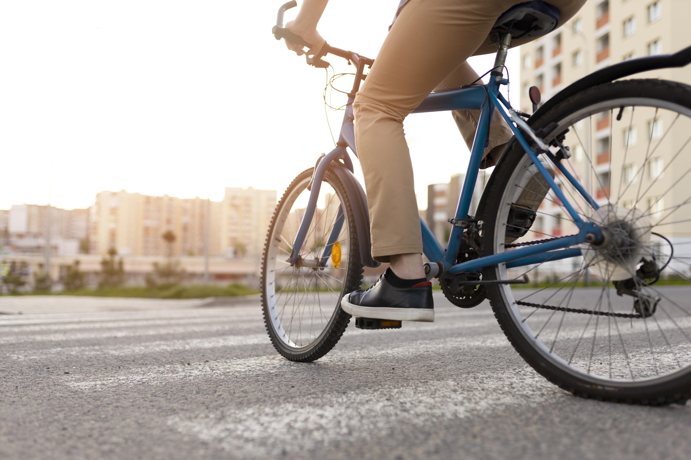
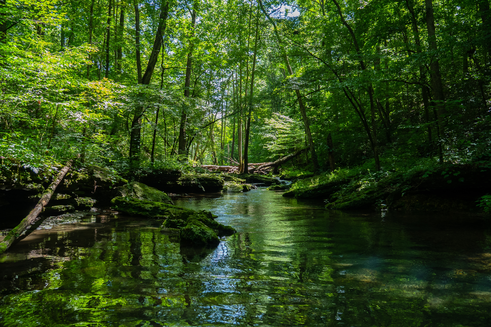

Como agricultores e cidadãos podem ajudar a salvar o planeta?
As mudanças climáticas estão cada vez mais visíveis em nosso dia a dia, como as chuvas fora de época, longos períodos de seca, aumento do calor, perda de colheitas etc. Mas e se eu te dissesse que você pode fazer parte da solução? Tanto os agricultores quanto a população urbana têm um papel essencial na luta contra o aquecimento global. Neste blog, mostramos ações práticas que você pode aderir agora mesmo!
🌾 Ação no Campo: Agricultura Sustentável
A agricultura tem um duplo papel no combate à crise climática: ela é uma das atividades mais afetadas pelas mudanças no clima, mas também pode ser uma das principais soluções. Adotar práticas sustentáveis no campo significa produzir mais, com menos impacto ambiental, e garantir alimentos de qualidade para todos.


🚜 1. Agricultura de Baixo Carbono
Essa abordagem busca reduzir as emissões de gases do efeito estufa e aumentar a captura de carbono pelo solo e pelas plantas. O plantio direto, por exemplo, evita o revolvimento do solo, preservando sua estrutura e fertilidade. A rotação de culturas melhora a nutrição do solo e reduz pragas naturalmente, diminuindo o uso de pesticidas. Essas práticas ajudam o agricultor a economizar e a preservar a terra para as próximas gerações.
🌳 2. Agroflorestas e Reflorestamento
Unir lavouras e árvores no mesmo espaço traz múltiplos benefícios: além de combater o desmatamento, as agroflorestas ajudam a regular o microclima, atraem polinizadores, reduzem o uso de defensivos químicos e mantêm o solo úmido e rico em nutrientes. Plantar árvores em áreas degradadas ou nas margens de rios também evita a erosão e protege nascentes de água potável.
💧 3. Uso Inteligente da Água
A água é um recurso precioso e cada vez mais escasso em muitas regiões. Técnicas de irrigação mais eficientes, como o gotejamento, garantem que as plantas recebam a quantidade certa de água, sem desperdício. O uso de cisternas para captar água da chuva também é uma forma econômica e ecológica de abastecer o cultivo em períodos de seca.
⚡ 4. Energias Renováveis no Campo
A produção agrícola pode se beneficiar muito de fontes limpas de energia. Instalar painéis solares ou biodigestores, que transformam dejetos animais em biogás, permite reduzir gastos com eletricidade e combustíveis fósseis. Além disso, essas tecnologias ajudam a tornar a propriedade mais autossuficiente e resiliente a crises energéticas.
🔥 5. Fim das Queimadas
A prática de queimar vegetação para limpar áreas de plantio é altamente prejudicial ao meio ambiente. Além de emitir grandes quantidades de CO₂, as queimadas destroem a biodiversidade, empobrecem o solo e colocam comunidades em risco. Alternativas como o manejo ecológico, a compostagem e o aproveitamento de resíduos como adubo devem ser priorizadas.
🏘️ Ação na Cidade: Pequenas Atitudes, Grande Impacto
Mesmo longe do campo, as pessoas nas cidades têm grande responsabilidade para reduzir o impacto ambiental. O modo como nos alimentamos, consumimos energia, descartamos lixo e nos deslocamos afeta diretamente o equilíbrio do clima.



🛒 1. Consumo Consciente
Tudo que consumimos deixa uma pegada no meio ambiente. Escolher produtos locais e sazonais, por exemplo, reduz as emissões causadas pelo transporte. Valorizar produtores pequenos e cooperativas locais também estimula economias sustentáveis. Evitar o desperdício de alimentos, comprando só o necessário, aproveitando sobras e armazenando corretamente é uma atitude poderosa e acessível a todos.
♻️ 2. Reduzir, Reutilizar, Reciclar
O descarte incorreto de resíduos é um dos maiores problemas ambientais nas cidades. Separar corretamente os recicláveis, reutilizar potes, roupas e materiais, e evitar o consumo excessivo são formas simples de gerar menos lixo e menos poluição. Incentivar a coleta seletiva e cooperativas de reciclagem também fortalece a economia circular.
💡 3. Economia de Energia
A eletricidade, quando gerada a partir de fontes fósseis, contribui para o aquecimento global. Por isso, pequenas atitudes como desligar luzes e aparelhos quando não estão em uso, usar lâmpadas LED, preferir eletrodomésticos com selo de eficiência energética e aproveitar a luz do sol fazem grande diferença na conta de luz e na pegada de carbono.
🚲 4. Transporte Sustentável
Os automóveis são responsáveis por uma parcela significativa das emissões de gases do efeito estufa. Usar o transporte público, andar de bicicleta ou caminhar quando possível são formas mais limpas de se deslocar. Outra alternativa é compartilhar caronas, usar aplicativos de mobilidade consciente ou optar por veículos elétricos.
🧼 5. Sustentabilidade no Dia a Dia: Escolhas Inteligentes em Casa
Pequenas decisões dentro de casa podem ter grande impacto ambiental. Optar por produtos de limpeza biodegradáveis e evitar o uso excessivo de plásticos, por exemplo, ajuda a reduzir a poluição da água e do solo. Usar sacolas reutilizáveis, evitar itens descartáveis (como talheres e copos de plástico), reaproveitar potes e comprar a granel são atitudes que reduzem o volume de lixo e o consumo de recursos naturais. Além disso, preferir cosméticos e itens de higiene com fórmulas naturais e sem embalagens excessivas colabora com a saúde do planeta e das pessoas.
🌱 Conclusão: O Futuro Está em Nossas Mãos
A mudança climática não é um desafio distante, ela está presente no nosso dia a dia, e enfrentá-la depende das escolhas que fazemos agora. Seja cultivando de forma mais consciente no campo, seja adotando hábitos sustentáveis na cidade, todos nós temos um papel essencial nessa jornada.
Não se trata apenas de preservar o planeta para o futuro, mas de construir um presente mais justo, equilibrado e saudável para todos. Pequenas atitudes geram grandes impactos quando praticadas em conjunto.

